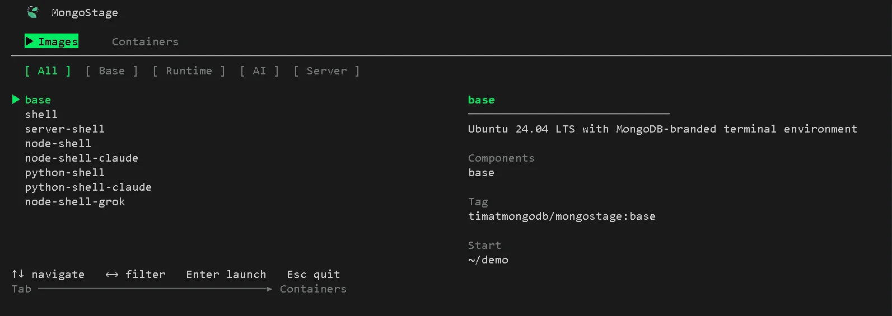
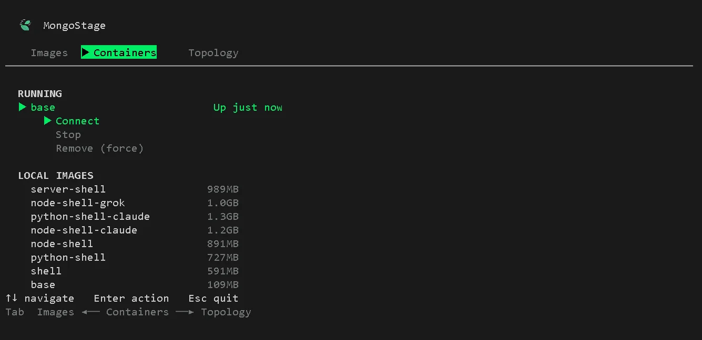
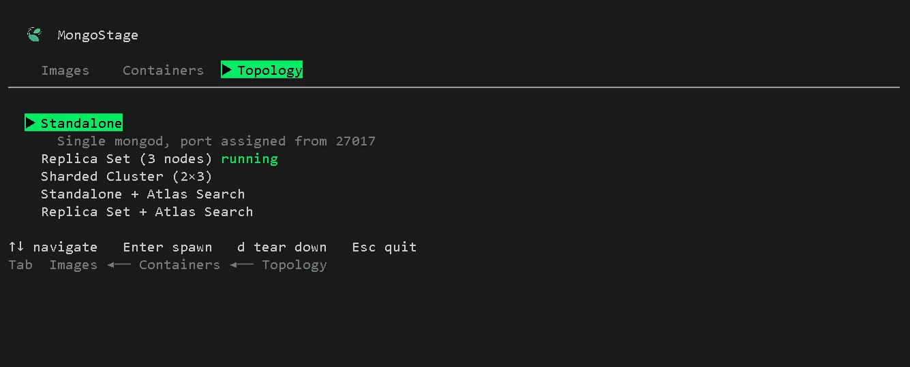

Disclaimer
This is an independent project and is not an official MongoDB product. It is intended for local development, demos, testing, and learning purposes only.
⚠️ Do not use this tool in production environments.
Install
Requirements: Node.js >= 22. Docker is not required upfront — mongostage setup installs it for you.
npm install -g mongostageQuick Start
mongostage setup # install Docker (first time only)
mongostage # open the interactive TUI
mongostage connect # connect to a container from the CLIInteractive TUI
Running mongostage with no arguments opens an interactive terminal UI.
Three pages, navigated with Tab:
- Images - Browse available images, filter by category (
← →), search by typing, launch withEnter - Containers - View running and stopped containers, stop/start/remove/shell in from a menu
- Topology - Spawn pre-configured multi-container MongoDB setups

The Containers page is where you manage everything that's running - start, stop, remove containers, and pull or delete images.

Topology
The Topology page lets you spin up pre-configured multi-container MongoDB setups without leaving the TUI.
Select a preset and press Enter - mongostage runs docker compose in the background,
finds available ports starting from 27017, and displays the connection string when the topology is ready.
Press c to copy it to clipboard, d to tear it down.
| Preset | Description |
|---|---|
| Standalone | Single mongod node |
| Replica Set (3 nodes) | 3-member replica set |
| Sharded Cluster | 2 shards x 3 nodes + config servers + mongos |
| Standalone + Atlas Search | Standalone mongod with mongot sidecar |
| Replica Set + Atlas Search | 3-node replica set with mongot sidecar |

Available Images
All images run as a non-root mongo user and include a Starship prompt. Use the short tag with any command — node-shell-claude, not the full timatmongodb/mongostage:node-shell-claude.
| Tag | Components | Category | Description |
|---|---|---|---|
| base | base | base | Ubuntu 24.04 LTS with MongoDB-branded terminal |
| shell | base, shell | shell | base + mongosh, mongoimport, mongoexport, mongodump |
| server-shell | base, server, shell | server | MongoDB Community Server 8.0 + full shell tooling |
| node-shell | base, shell, node | runtime | Node.js 22 LTS + mongosh + shell tools |
| node-shell-claude | base, shell, node, claude | ai | Node.js 22 LTS + mongosh + Claude Code CLI |
| python-shell | base, shell, python | runtime | Python 3.12 + mongosh + shell tools |
| python-shell-claude | base, shell, python, claude | ai | Python 3.12 + mongosh + Claude Code CLI |
| node-shell-grok | base, shell, node, grok | ai | Node.js 22 LTS + mongosh + Grok Build CLI |
Commands
mongostage connect [image]
Pull and attach to a MongoDB environment. Creates a new container or reattaches to an existing one.
mongostage connect # pick image interactively
mongostage connect node-shell-claude # connect directly
mongostage connect node-shell --fresh # remove any existing container first
mongostage connect node-shell --name my-env # custom container name| Flag | Description |
|---|---|
| --image <tag> | Image slug (alternative to positional arg) |
| --fresh | Remove existing container before creating a new one |
| --name <name> | Custom container name |
mongostage list
List all available images from the registry.
mongostage list # all images
mongostage list --filter ai # only AI images
mongostage list --filter runtime # Node + Python imagesCategories: base, shell, server, runtime, ai
mongostage env
Manage credentials injected as environment variables into every container. Stored at ~/.mongostage/.env.
mongostage env set ANTHROPIC_API_KEY=sk-ant-... # add or overwrite a key
mongostage env list # list all keys (values masked)
mongostage env remove ANTHROPIC_API_KEY # remove one key
mongostage env clear # remove all keys (prompts first)Key format: must match /^[A-Z_][A-Z0-9_]*$/i — letters, digits, underscores only.
mongostage setup
Install Docker on this machine. Safe to re-run; detects if Docker is already running.
mongostage setup| Platform | Method |
|---|---|
| Linux / WSL2 | Rootless Docker via get.docker.com, falls back to system install |
| macOS | Installs Colima + Docker via Homebrew |
| Windows (native) | Installs Docker Desktop via winget |
macOS: Homebrew must be installed before running mongostage setup. Get it at brew.sh.
mongostage status
Show all MongoStage containers and disk usage.
mongostage statusmongostage start [image]
Start a stopped container.
mongostage start # pick from stopped containers
mongostage start node-shell # start by slug
mongostage start node-shell --attach # start and attach to bashmongostage stop [image]
Stop a running container.
mongostage stop # pick from running containers
mongostage stop node-shell # stop by slug
mongostage stop --all # stop all running MongoStage containersmongostage run [image]
Run a container in detached mode. Useful for dev servers and CI.
mongostage run node-shell
mongostage run server-shell --port 27017:27017
mongostage run node-shell --mount ~/myproject
mongostage run node-shell --env /path/to/custom.env| Flag | Description |
|---|---|
| --port <mapping> | Port mapping, e.g. 27017:27017 |
| --mount <path> | Mount a host directory at /home/mongo/myproject |
| --env <file> | Load env vars from a specific file instead of ~/.mongostage/.env |
mongostage remove [image]
Remove a container.
mongostage remove # pick from stopped containers
mongostage remove node-shell # remove by slug
mongostage remove node-shell --force # stop and remove even if running
mongostage remove --all # remove all stopped containersmongostage clean
Remove all stopped MongoStage containers at once.
mongostage clean # remove stopped containers (prompts first)
mongostage clean --force # remove all, running or not
mongostage clean --images # also remove pulled Docker imagesmongostage timezone [tz]
Set the timezone for containers. The default timezone inside containers is UTC.
mongostage timezone # show current timezone setting
mongostage timezone America/New_York # set timezone
mongostage timezone --reset # reset to UTCGlobal Flags
All commands accept:
| Flag | Description |
|---|---|
| --verbose | Print extra output |
| --silent | Suppress all non-error output |
| --version | Print version and exit |
| --help | Print help for a command |
Configuration
~/.mongostage/.env — credentials
Env vars injected into every container at connect/run time. Managed via mongostage env.
ANTHROPIC_API_KEY=sk-ant-...
OPENAI_API_KEY=sk-...
MONGO_MOUNT=~/myproject
MONGO_WORKDIR=/home/mongo/myproject| Key | Effect |
|---|---|
| MONGO_MOUNT | Host directory to bind-mount into the container |
| MONGO_WORKDIR | Working directory inside the container (default /home/mongo/demo) |
WSL2 users: MONGO_MOUNT must be a WSL2-style path like ~/myproject or /home/you/project. Windows paths like C:\Users\... are not supported.
~/.mongostage/config.json — CLI state
Auto-created and updated by mongostage setup. You do not normally edit this file by hand.
{
"setupComplete": true,
"os": "linux",
"dockerMethod": "engine",
"defaultOrg": "timatmongodb",
"lastUpdated": "2026-06-17T..."
}| Field | Values | Description |
|---|---|---|
| setupComplete | true/false | Whether setup has been run |
| os | linux, mac, windows | Detected OS |
| dockerMethod | engine, colima | How Docker is installed |
| defaultOrg | string | Docker Hub org prefix for images |
The config directory can be overridden with the MONGOSTAGE_CONFIG_DIR environment variable.
Platform Notes
macOS — Homebrew is required before running mongostage setup. Docker runs via Colima, a lightweight VM. The setup command installs both automatically once Homebrew is present.
WSL2 — Runs as Linux. MONGO_MOUNT in ~/.mongostage/.env must be a WSL2 path (e.g. ~/project), not a Windows path (C:\Users\...). MongoStage will reject Windows paths with a clear error.
Windows native — Docker Desktop is installed via winget. A machine restart may be required before Docker is usable.